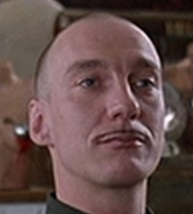

101 - 804 Fake Street,
Vancouver BC, V6O3P3
knoxh@urbanachievers.com
+1 778-678-9354

Knox Harrington
Video Artist
Summary
Self-taught visual effects artist with experience in fine arts productions, advertisement and new media.
Having previously worked in marketing and sales, I am currently looking to bring my creative outlook and technical finesse into companies who use video to promote businesses, products or artists.
Skills
- 2d and 3d rendering
- Texturing
- Compositing
- On-set supervision
- Color grading
- Motion graphics design
Tools
-
Maya
-
Zbrush
-
Adobe After Effects
-
Photoshop
-
Final Cut Pro
-
Paint
Work Experience
-
Disney - The Lion King (1994)
Worked on keying, rotoscoping and compisiting the promo trailer
-
Valve - Half Life (1998)
3d Character design and ragdoll animations
-
Wasserman Partners Advertising (2004-2008)
Television advertisements for several brands
-
Dominos Pizza (2008-current)
Delivery guy
Awards
- SoCal Video Awards - Best moustache (2001)
- Maude Lebowski Art Studio - Honourable mention, Best Laughter (2001)
Education
BSc in Psychology, Adams College (1988-1992)